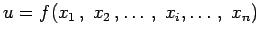
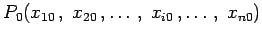
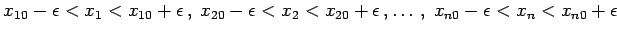
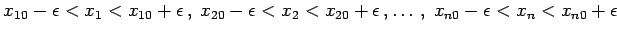
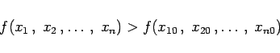

Inhalt Index DeskTop Bronstein

 Differentialrechnung Differentiation von Funktionen von mehreren Veränderlichen Extremwerte von Funktionen von mehreren Veränderlichen
Differentialrechnung Differentiation von Funktionen von mehreren Veränderlichen Extremwerte von Funktionen von mehreren Veränderlichen


Eine Funktion  besitzt im Punkt  einen relativen Extremwert, wenn sich eine Zahl  derart angeben läßt, daß das Gebiet  zum Definitionsbereich der Funktion gehört und für jeden Punkt dieses Gebiets mit Ausnahme von P0 für ein Maximum die Ungleichung
derart angeben läßt, daß das Gebiet  zum Definitionsbereich der Funktion gehört und für jeden Punkt dieses Gebiets mit Ausnahme von P0 für ein Maximum die Ungleichung
| (6.69a) |
und für ein Minimum die Ungleichung
|  | (6.69b) |
gilt. In der Sprache des Begriffs des mehrdimensionalen Raumes sind in den Punkten eines relativen Maximums oder relativen Minimums die Funktionswerte größer oder kleiner als in den benachbarten Punkten.